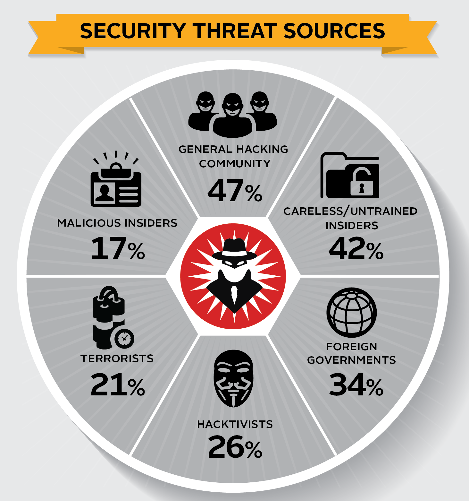

Cybersecurity is the practice of protecting systems, networks, and programs from digital attacks. These cyberattacks are usually aimed at accessing, changing, or destroying sensitive information; extorting money from users; or interrupting normal business processes. Implementing effective cybersecurity measures is particularly challenging today because there are more devices than people, and attackers are becoming more innovative.
Just as pollution was a side effect of the Industrial Revolution, so are the many security vulnerabilities that come with increased internet connectivity. Cyber attacks are exploitations of those vulnerabilities. For the most part unavoidable, individuals and businesses have found ways to counter cyber attacks using a variety of security measures and just good ol’ common sense. Regardless how safe a business feels it and its systems are, however, everyone must still be aware of and vigilant toward online threats.

1. Cybercrime includes single actors or groups targeting systems for financial gain or to cause disruption.
2. Cyber-attack often involves politically motivated information gathering.
3. Cyberterrorism is intended to undermine electronic systems to cause panic or fear.
So, how do malicious actors gain control of computer systems? Here are some common methods used to threaten cyber-security:
Malware
Malware means malicious software. One of the most common cyber threats, malware is software that a cybercriminal or hacker has created to disrupt or damage a legitimate user’s computer. Often spread via an unsolicited email attachment or legitimate-looking download, malware may be used by cybercriminals to make money or in politically motivated cyber-attacks.
Phishing is when cybercriminals target victims with emails that appear to be from a legitimate company asking for sensitive information. Phishing attacks are often used to dupe people into handing over credit card data and other personal information.
A man-in-the-middle attack is a type of cyber threat where a cybercriminal intercepts communication between two individuals in order to steal data. For example, on an unsecure WiFi network, an attacker could intercept data being passed from the victim’s device and the network.
A denial-of-service attack is where cybercriminals prevent a computer system from fulfilling legitimate requests by overwhelming the networks and servers with traffic. This renders the system unusable, preventing an organization from carrying out vital functions.
How can businesses and individuals guard against cyber threats? Here are our top cyber safety tips: